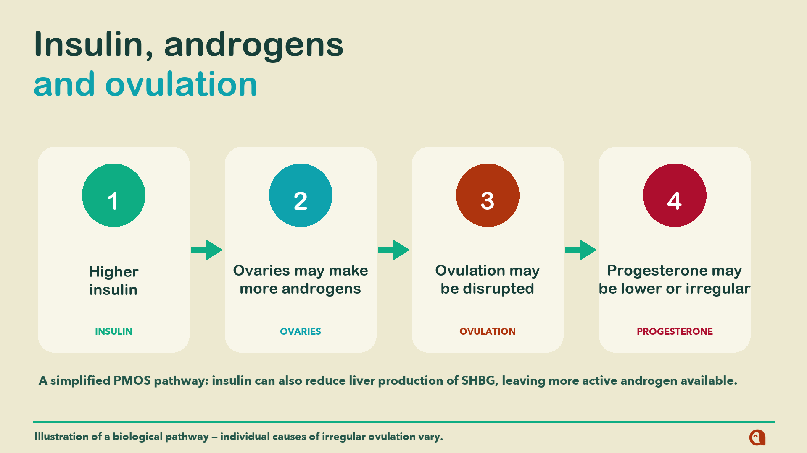
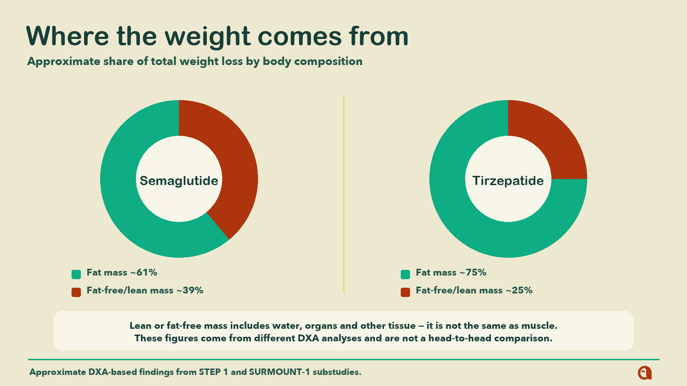
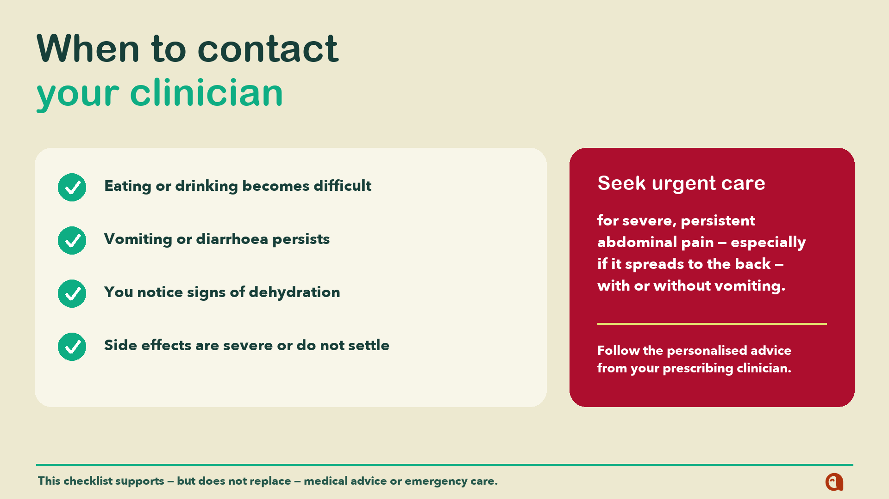

Picture someone with PMOS who has spent years being told the answer is "just lose weight." Then a friend mentions a weekly injection that quiets hunger and lowers blood glucose. It sounds like the shortcut they've been waiting for.
But "will this help me lose weight?" is the wrong first question. A better one is: what is this medicine actually expected to improve for me, and what do I need to protect while I take it? This post walks through both.
The short version
- GLP-1 medicines can improve blood glucose and may support metabolic health. They do not cure PMOS.
- A PMOS diagnosis alone is not a standard reason to prescribe one.
- Some lean tissue is lost along with fat. Strength training and enough food help protect it.
- A smaller appetite should never mean skipping meals, fluids or training.
First, a quick note on the name
PCOS (polycystic ovary syndrome) has been renamed polyendocrine metabolic ovarian syndrome (PMOS). The change came out of a global consensus process, and the condition affects about one in eight women. [1] A transition period is under way, so you will still see "PCOS" in clinics and older research. Read more in our post, From PCOS to PMOS: How we got here and what it means for you.
Why insulin sits at the centre of PMOS
Insulin is a hormone made by the pancreas. Think of it as a key that lets glucose move from your blood into your cells, where it is used for energy or stored for later. [2] In insulin resistance, muscle, fat and liver cells respond less well to that key. The pancreas compensates by making more insulin to keep blood glucose stable. [2]
Here is why that matters in PMOS: high insulin can push the ovaries to make more androgens and disrupt ovulation. Without ovulation, the usual post-ovulation rise in progesterone is reduced or absent. [3] That chain, from insulin to androgens to ovulation, is the reason people are asking whether GLP-1 medicines could help.


What GLP-1 medicines actually do
Glucagon-like peptide-1, or GLP-1, is a natural hormone your gut releases after a meal. It helps regulate blood glucose, digestion and appetite, but your body breaks it down within minutes. [4]
GLP-1 receptor agonists, usually just called GLP-1 medicines, imitate that hormone but are built to last far longer. But they are not insulin. [5] They work in four main ways:
- Insulin release: they help the pancreas release more insulin when blood glucose is high.
- Glucagon: they reduce glucagon, so the liver releases less glucose.
- Digestion: they slow stomach emptying, especially early in treatment.
- Appetite: you feel full sooner and hungrier less often.
Together, these effects can lower blood glucose and often reduce calorie intake and body weight. [4] [5]
Can they help with PMOS?
Possibly, for some people, and the evidence is still early.
In one placebo-controlled trial of 72 women with PCOS, 26 weeks of liraglutide cut body weight by about 5 kg, reduced liver fat by 44% and visceral fat by 18%, and nudged some androgen markers in the right direction. But measures of insulin resistance did not change. [6] A more recent meta-analysis also reports benefits for weight and some hormonal measures, with more regular cycles or ovulation reported in some studies. [7]
Bottom line: GLP-1 medicines help with weight and glucose and may help some hormonal markers. They are not a cure, not every symptom improves, and evidence on fertility and pregnancy outcomes remains limited. [7]
Could a GLP-1 medicine be right for you?
A clinician may consider one for type 2 diabetes, or when weight-management treatment is indicated. [5] The international PMOS guideline says anti-obesity medications can be considered for adults with PMOS in line with general-population guidelines. In other words, a PMOS diagnosis on its own is not the trigger, and many people with PMOS do not need or benefit from weight loss. [3]
Treatment should match your symptoms and goals. Other options include lifestyle support, metformin, hormonal treatment and fertility care. [3]
The part people skip: protecting your muscle
Most of the weight lost on a GLP-1 medicine is fat. But not all of it. In a 2026 review, fat-free mass made up roughly 39% of the weight lost on semaglutide and 25% on tirzepatide. [5] In a small exploratory STEP 1 substudy of 140 people, total lean mass fell over 68 weeks even as its proportion of body weight rose. [9]


Before you worry, two caveats.
- Lean mass includes muscle, water, organs and other tissue, so a fall in lean mass does not equal muscle loss. For example, liver mass can shrink with weight loss and show up as lost fat-free mass.
- It is not yet known whether this loss affects physical function, and some data suggest muscle quality may even improve with less fat inside the muscle. [5]
So why bother? Because very low food intake and rapid weight loss can threaten muscle and strength, and your muscles do real work for your metabolism. They are a major site of glucose use, which is part of why staying active supports insulin sensitivity. [2] Reduced appetite can also mean you simply don't eat enough protein. [5]
What to do
- Lift something, build a habit. Resistance training is the best-supported tool. In a 2025 meta-analysis of diet-induced weight loss, adding resistance exercise protected fat-free mass and increased the share of weight lost as fat. [10] Those trials were in diet-induced weight loss rather than GLP-1 treatment, so treat it as strong but indirect evidence. A sensible target is to work your major muscle groups at least twice a week and then build up gradually. [11]
- Eat for recovery. Prioritise adequate protein, vegetables and fruit, fibre-rich carbohydrates, healthy fats and fluids. [3] [8]
- Get support if eating gets hard. A joint advisory from four U.S. clinical societies puts preventing nutrient deficiencies and preserving muscle and bone, through resistance training and an appropriate diet, among its priorities, and notes that dietitian counselling can help. [8]
- Keep expectations realistic. There is no single PMOS diet, and protein alone cannot replace strength training. [3] [8]
Can weight loss happen too quickly?
Rapid weight loss is not automatically harmful. The trouble starts when a quiet appetite makes it hard to eat, drink or train enough. That can bring fatigue, dehydration, weakness and greater loss of lean tissue. [8] Dehydration is not trivial either: the prescribing information for semaglutide warns about acute kidney injury from volume depletion. [12]


Do not severely restrict food or increase your dose without medical guidance.
Safety and pregnancy
The most common side effects are nausea, vomiting, diarrhoea and constipation. [5] Slower dose escalation may improve tolerability, so ask your clinician how the dose will be stepped up. [5]
Gallstones are more common with these medicines. [5] Acute pancreatitis is a labelled warning, although large-trial analyses have not shown that GLP-1 medicines raise its risk. Severe, persistent abdominal pain still needs urgent medical attention. [5] [12] If you also use insulin or certain other diabetes medicines, those doses may need review to prevent low blood glucose. [12]
GLP-1 medicines are not recommended if you are planning pregnancy or are pregnant. [5] If pregnancy is possible, talk to a clinician about contraception and when to stop. For semaglutide specifically, the label advises stopping at least two months before a planned pregnancy. [12]
The bottom line
For people who are eligible, a GLP-1 medicine may improve blood glucose control or make weight management more achievable. It will not build muscle, cure PMOS or treat every symptom.
The strongest plan combines the right medication, progressive strength training, enough food and regular review. The goal is better metabolic health, not the fastest possible weight loss. [8]
Questions to bring to your clinician
- What is this medicine expected to improve for me?
- How will we monitor side effects, nutrition and strength?
- Do my other PMOS symptoms need a different treatment?
- What is the plan if I can't eat enough, or if I'm planning a pregnancy?
This post is scientifically reviewed information, not medical advice. Talk to your own clinician before starting, changing or stopping any medicine.
Sources
- The Lancet · Polyendocrine metabolic ovarian syndrome, the new name for PCOS: a global consensus process
- NCBI Bookshelf · Biochemistry, insulin metabolic effects
- International evidence-based PCOS guideline (2023)
- NCBI Bookshelf · GLP-1 physiology and GLP-1 receptor agonists
- J Clin Invest 2026 · The science of safety: adverse effects of GLP-1 receptor agonists
- Randomized trial · Liraglutide and ectopic fat in PCOS
- Meta-analysis · GLP-1 receptor agonists in PMOS
- Joint advisory · Nutritional priorities to support GLP-1 therapy
- STEP 1 exploratory body-composition substudy (conference abstract) · Semaglutide and lean mass
- Systematic review · Resistance exercise during dietary weight loss
- NHS · Physical activity and strength-training guidance
- Wegovy (semaglutide) prescribing information · DailyMed